「名著だと聞いて『7つの習慣』を手に取ったけれど、分厚くて、文章も難しくて、途中で閉じてしまった」。
そんな経験はありませんか。
スティーブン・R・コヴィーが書いた『7つの習慣』は、世界中で4,000万部以上売れた自己啓発の金字塔です。
けれども原著はとても骨太で、哲学的な表現も多く、最後まで読み通せずに挫折する人がとても多い本でもあります。
この本は、そんなあなたのために書きました。
難しい言葉をできるだけ使わず、毎日の仕事や暮らしの場面に当てはめながら、7つの習慣の本質だけを丁寧にお届けします。
各章のおわりには、登場人物たちが習慣を実践していくマンガも用意しました。
理屈で「わかる」だけでなく、物語で「腑に落ちる」ことを目指しています。
7つの習慣は、小手先のテクニック集ではありません。
コヴィー博士が繰り返し説いたのは、人格そのものを土台にするという考え方です。
表面的なノウハウで一時的に成果を出すのではなく、内側の自分が変わることで、結果が後からついてくる。
これを「インサイド・アウト」と呼びます。
本書は全部で5つの章に分かれています。
第1章では、すべての習慣の土台となる「ものの見方」と「主体性」を学びます。
第2章と第3章で自分自身を整える「私的成功」を、第3章後半と第4章で人と協力する「公的成功」を扱います。
そして第5章で、これらすべてを支え続けるための「自分を磨く習慣」にたどり着きます。
大切なのは、完璧に7つすべてを実践しようとしないことです。
まずはどれか1つ、「これならできそう」と感じたものから始めてください。
小さな一歩が、半年後、一年後のあなたを大きく変えていきます。
なぜ、わざわざマンガで学ぶのでしょうか。
それは、頭で理解した知識よりも、心が動いた体験のほうが、ずっと深く記憶に残るからです。
登場人物が悩み、つまずき、そして気づいていく姿を追ううちに、あなた自身の毎日と自然に重なっていきます。
「ああ、これは自分のことだ」と感じた瞬間こそ、習慣が本当に身につき始める瞬間なのです。
この本に登場するのは、特別な天才ではありません。
仕事や人間関係に悩む、どこにでもいる普通の人たちです。
彼らがほんの少しずつ変わっていく物語を通して、あなたも「これなら自分にもできそうだ」と感じてもらえたら嬉しいです。
それでは、人生をより効果的に生きるための旅を、一緒に始めましょう。
01第1章 すべては「見方」から変わる
すべては「見方」から変わる
ものの見方が、現実をつくる
私たちは、世界をありのままに見ていると思い込んでいます。
けれども実際には、一人ひとりが自分だけの「メガネ」を通して世界を見ているのです。
コヴィー博士はこのメガネのことを「パラダイム」と呼びました。
パラダイムとは、ものの見方や考え方の枠組み、いわば心の中にある「地図」のことです。
たとえば初めて訪れた街で、間違った地図を渡されたとしましょう。
どれだけ一生懸命歩いても、目的地にはたどり着けません。
それは努力が足りないからでも、態度が悪いからでもなく、そもそも持っている地図が間違っているからです。
私たちの人生にも、同じことが起こります。
「自分は何をやってもうまくいかない」「あの人は敵だ」といった思い込みのメガネをかけたまま行動すれば、どれだけがんばっても望む結果は得られません。
問題は外の世界ではなく、自分のメガネのほうにあるのかもしれないのです。
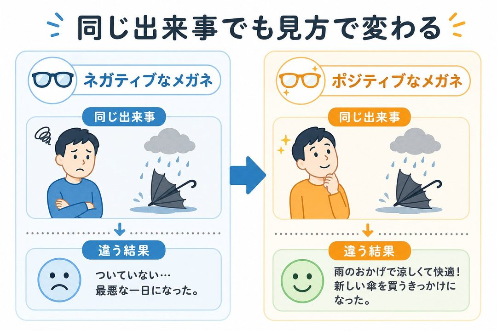
同じ出来事でも見方で変わる
ここで大切なのは、メガネはかけ替えられるということです。
ものの見方が大きく変わる瞬間を「パラダイムシフト」と呼びます。
これまで「面倒な上司」に見えていた人が、実は自分の成長を願っていたのだと気づいた瞬間、世界の意味そのものが変わる。
この見方の転換こそが、変化の出発点なのです。
インサイド・アウト ―― 内側から始める
問題が起きたとき、多くの人は「外」を変えようとします。
「会社が悪い」「相手が変わってくれれば」「環境さえ整えば」。
これを「アウトサイド・イン」、外から内へという発想と言います。
しかしコヴィー博士は、まったく逆の道を示しました。
まず自分自身の内面から変えていくという「インサイド・アウト」の考え方です。
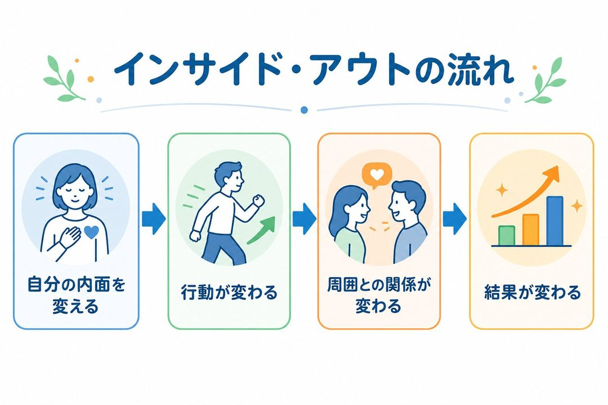
インサイド・アウトの流れ
たとえば、職場の人間関係に悩んでいるとします。
アウトサイド・インの人は「あの人さえ変わってくれれば」と願い続けます。
けれど相手は、こちらの思いどおりには変わりません。
一方インサイド・アウトの人は、「自分にできることは何だろう」と問いかけます。
自分の態度や言葉を変えると、不思議と相手の反応も少しずつ変わっていきます。
変えられるのは、いつも自分だけです。
けれど自分が変わると、まわりとの関係が変わり、やがて結果が変わっていく。
これがすべての習慣の土台となる発想です。
同じものが、まったく違って見える
パラダイムの力を、もう少し体感してみましょう。
有名な「だまし絵」をご存じでしょうか。
同じ一枚の絵が、ある人には若い女性に見え、別の人には老婆に見える。
どちらか一方が見えていると、もう一方はなかなか見えてきません。
けれど、いったん両方の見方を知ると、自由に切り替えられるようになります。
これは、私たちの人間関係でもまったく同じです。
「あの同僚は冷たい人だ」というパラダイムでその人を見ていると、すべての言動が冷たく感じられます。
挨拶が短いのも、メールがそっけないのも、「やっぱり冷たい」という証拠に見えてしまう。
けれど、「あの人は照れ屋で不器用なだけかもしれない」と見方を変えてみると、同じ言動が急に違って見えてきます。
大切なのは、自分が今どんなパラダイムでその人や状況を見ているかに、自分で気づくことです。
私たちは「事実を見ている」と思い込んでいますが、実際には「自分の解釈」を見ているにすぎません。
そのことに気づけたとき、私たちは初めて、メガネをかけ替える自由を手にするのです。
第1の習慣 ―― 主体的である
ここから、いよいよ7つの習慣の1つ目に入ります。
第1の習慣は「主体的である」。
英語では Be Proactive、つまり自分から進んで行動するという意味です。
主体性を理解するうえで欠かせないのが、「刺激と反応の間にあるスペース」という考え方です。
何か出来事（刺激）が起きたとき、私たちはすぐに反応してしまいがちです。
けれど人間には、刺激と反応の間に「どう反応するかを選ぶ自由」があります。
動物にはないこの選択の力こそが、人間の最大の強みなのです。
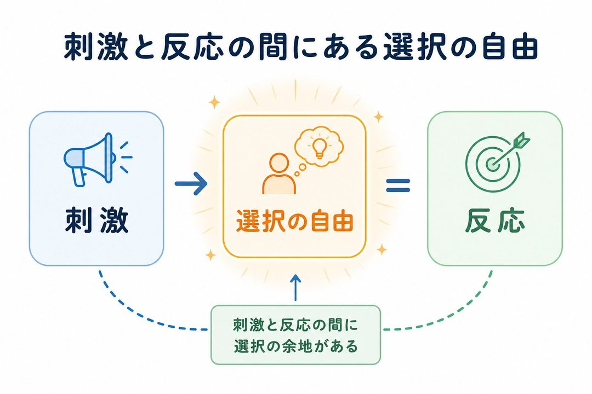
刺激と反応の間にある選択の自由
たとえば、上司から厳しい言葉を投げかけられたとします。
反応的な人は、その瞬間にカッとなって言い返したり、一日中落ち込んだりします。
出来事に「させられて」しまうのです。
一方、主体的な人は、ひと呼吸おいて考えます。
「この言葉から何を学べるだろう」「自分はどう振る舞いたいだろう」。
同じ出来事でも、選び方次第でまったく違う一日になるのです。
関心の輪と影響の輪
主体的に生きるための、とても実用的な道具があります。
「関心の輪」と「影響の輪」という2つの輪です。
関心の輪とは、自分が気になっていることすべてです。
天気、景気、他人の言動、過去の失敗――。
その中で、自分の力で実際に変えられることだけを集めたのが「影響の輪」です。
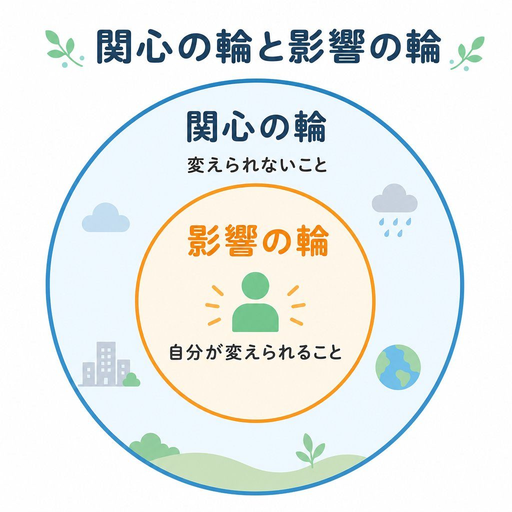
関心の輪と影響の輪
反応的な人は、関心の輪ばかりに目を向けます。
「景気が悪い」「あの人が悪い」と、自分にはどうにもできないことに文句を言い続け、エネルギーをすり減らしていきます。
すると皮肉なことに、影響の輪はどんどん小さくなっていくのです。
反対に、主体的な人は影響の輪に集中します。
今日の自分の態度、かけられる言葉、準備できること。
自分が変えられることに力を注いでいくと、影響の輪は少しずつ大きく広がっていきます。
やがて、これまで手の届かなかったことにまで影響を与えられるようになるのです。
口ぐせを変えるだけでも効果があります。
「どうせ無理だ」「あいつのせいだ」という反応的な言葉を、「私はこうする」「やってみよう」という主体的な言葉に置き換えてみてください。
言葉が変われば、行動が変わり、人生が変わります。
反応的な一日と、主体的な一日
少し具体的な場面で考えてみましょう。
月曜の朝、あなたは満員電車で足を踏まれ、駅では雨に降られ、会社に着くと上司から「あの資料、まだできてないのか」と言われたとします。
反応的な人は、この一連の出来事に完全に支配されてしまいます。
「最悪の朝だ」「ついてない」「あの上司は本当に嫌味だ」。
心はざわつき、午前中はずっと不機嫌なまま。
その不機嫌が同僚への態度ににじみ出て、午後にはちょっとした行き違いから口論になる。
外で起きた出来事が、ドミノ倒しのように一日全体を壊していくのです。
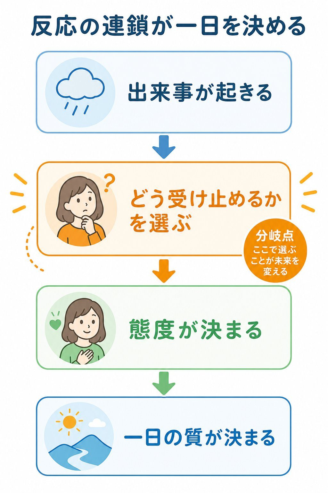
反応の連鎖が一日を決める
主体的な人は、同じ朝を過ごしても違います。
足を踏まれても「混んでいたから仕方ない」と受け流し、上司の言葉には「では今すぐ仕上げます」と答える。
出来事そのものは変えられなくても、それにどう反応するかは自分で選べると知っているからです。
天気や他人の機嫌は影響の輪の外。
自分が握っているハンドルだけに集中する。
すると、午後には落ち着いて仕事を進められ、一日全体が穏やかに流れていきます。
同じ出来事、同じ一日。
違うのは、外の世界ではなく、選ぶという一瞬の使い方だけなのです。
第1章のまとめ ―― 明日からの小さな一歩
第1章では、すべての習慣の土台を学びました。
私たちは自分のメガネ（パラダイム）を通して世界を見ていること。
問題は外ではなく、まず自分の内側から変えること（インサイド・アウト）。
そして、出来事に流されず自分で反応を選ぶこと（主体的である）。
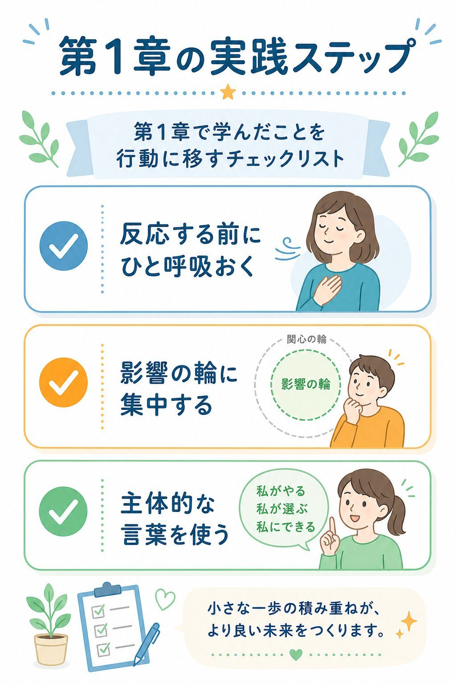
第1章の実践ステップ
明日からの小さな一歩として、「ひと呼吸おく」ことから始めてみましょう。
イラッとしたとき、落ち込みそうになったとき、反応する前に一瞬だけ立ち止まる。
その小さな隙間に、あなたの選択の自由があります。
主体性とは、その隙間を大切にすることから始まるのです。
02第2章 人生に設計図を持つ
人生に設計図を持つ
すべてのものは、二度つくられる
家を建てるとき、いきなり木材を切り始める大工はいません。
まず頭の中で完成形をイメージし、それを設計図に落とし込み、それからようやく工事に取りかかります。
コヴィー博士はこれを、「すべてのものは二度つくられる」という言葉で表現しました。
一度目は頭の中での創造（知的創造）、二度目は実際の創造（物的創造）です。
設計図がしっかりしていれば、立派な家が建ちます。
逆に設計図があいまいなまま着工すれば、後から何度もやり直すことになります。
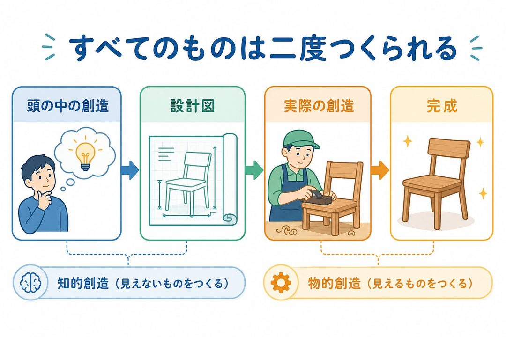
すべてのものは二度つくられる
これは人生でも同じです。
多くの人は、自分の人生の「設計図」を持たないまま、目の前のことに追われて毎日を過ごしています。
気がつけば、誰かが決めたレールの上を、自分で選んだつもりもなく走っている。
自分の人生の設計図は、自分で描かなければ誰も描いてくれないのです。
第2の習慣 ―― 終わりを思い描くことから始める
第2の習慣は「終わりを思い描くことから始める」。
英語では Begin with the End in Mind、つまり最終的なゴールをはっきりさせてから歩き出すということです。
コヴィー博士は、ここで少し衝撃的な問いを投げかけます。
「あなた自身の葬儀を想像してください。
参列した人たちに、あなたはどんな人だったと語ってほしいですか」。
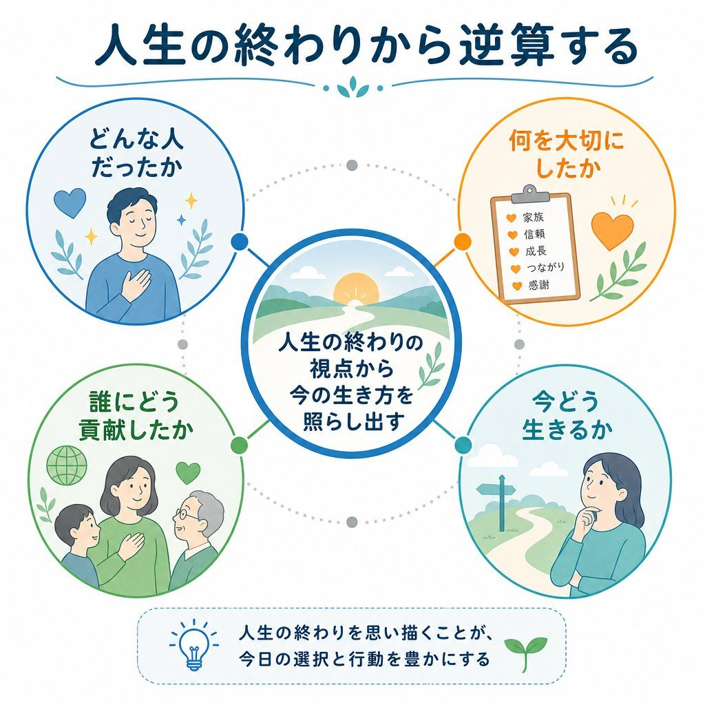
人生の終わりから逆算する
少し怖い問いかもしれません。
けれど、人生の終わりという「最終地点」から逆算すると、今この瞬間に何を大切にすべきかが驚くほどはっきり見えてきます。
仕事の成功だけを語ってほしいのか、それとも家族や友人に優しかった人だと言ってほしいのか。
その答えこそが、あなたが本当に大切にしている価値観なのです。
毎日の小さな判断に迷ったとき、この「終わり」を思い出してください。
ゴールが明確な人は、目先の誘惑や雑音に振り回されません
ミッション・ステートメントを書く
「終わりを思い描く」を具体的な形にしたものが、ミッション・ステートメントです。
これは、自分がどんな人間でありたいか、何を大切にして生きるかを言葉にした、いわば「自分の憲法」です。
国に憲法があるように、個人にも揺るがない基準があると、人生の判断がぶれなくなります。
周囲の評価や流行に流されず、「自分はこう生きると決めた」という軸を持てるからです。
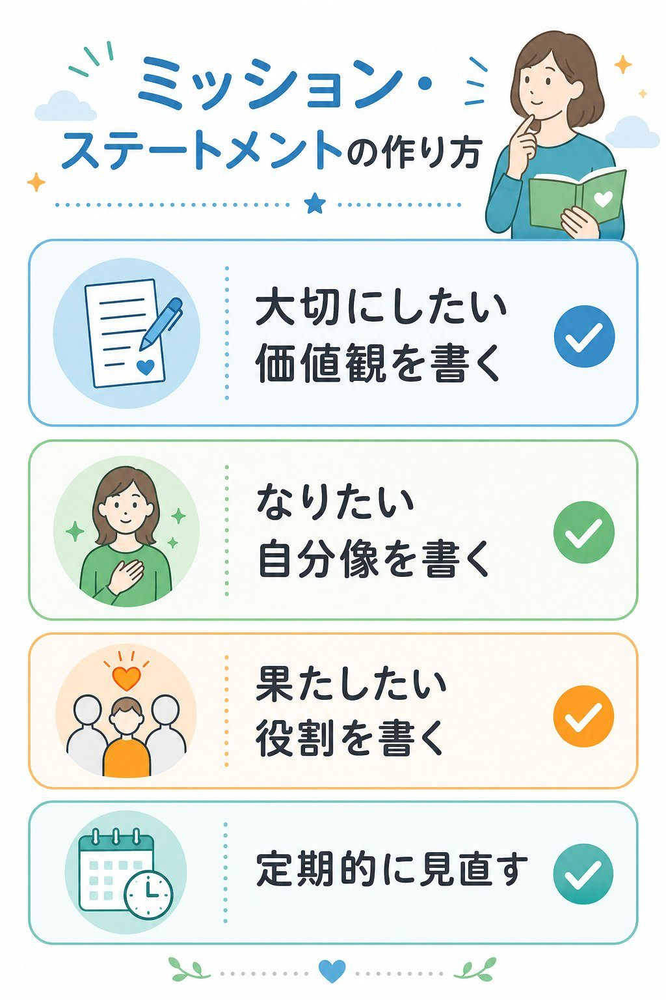
ミッション・ステートメントの作り方
最初から完璧なものを書く必要はありません。
「家族を大切にする」「誠実であり続ける」「学び続ける」――そんな短い言葉からで構いません。
大切なのは、自分の内側にある本当の願いに耳を澄ますことです。
一度書いたら、時々読み返し、少しずつ磨いていきましょう。
これがあなたの人生の設計図になります。
第3の習慣 ―― 最優先事項を優先する
設計図ができたら、次はそれを日々の行動に移す番です。
第3の習慣は「最優先事項を優先する」。
英語では Put First Things First、つまり本当に大切なことを、一番に行うということです。
ここで多くの人がつまずきます。
「大切なことが何かはわかっている。
でも、毎日忙しくてそれどころじゃない」。
その通りです。
私たちの一日は、次から次へとやってくる「緊急の用事」で埋め尽くされています。
時間管理マトリックス ―― 第II領域に投資する
そこでコヴィーが示したのが、有名な「時間管理マトリックス」です。
すべての活動を「緊急かどうか」「重要かどうか」の2つの軸で4つの領域に分けます。
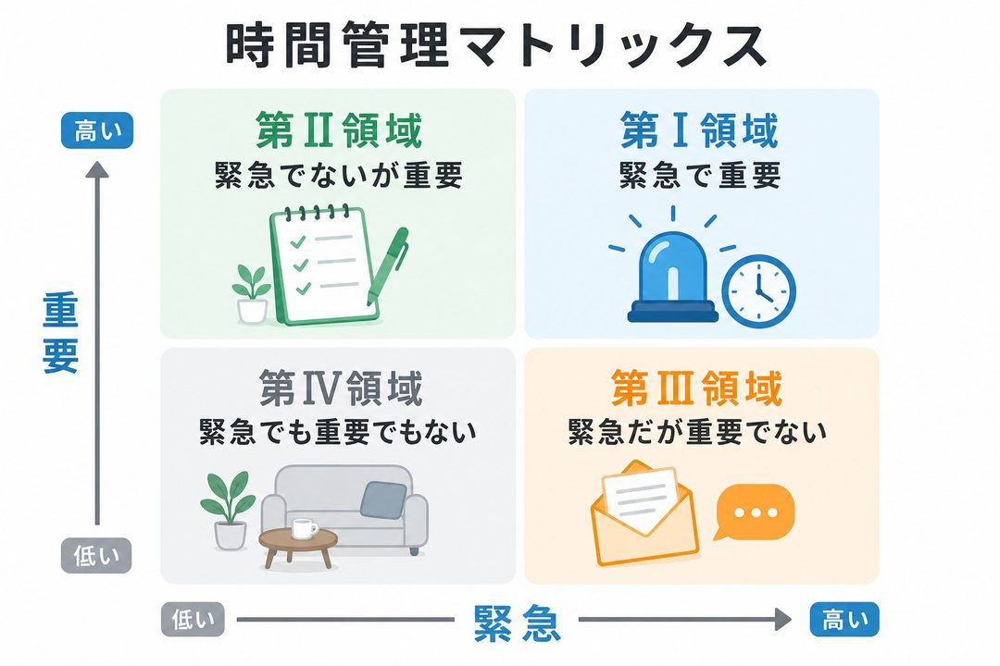
時間管理マトリックス
第I領域は「緊急かつ重要」。
締め切り直前の仕事やトラブル対応です。
第III領域は「緊急だが重要でない」。
意味のない会議や、どうでもいい割り込み。
第IV領域は「緊急でも重要でもない」。
ただの暇つぶしです。
注目すべきは、第II領域「緊急ではないが重要なこと」です。
健康づくり、人間関係の手入れ、将来の準備、学習、計画――どれも締め切りがないため、つい後回しにされがちです。
けれど、人生を本当に豊かにするのは、この第II領域への投資なのです。
成果を出し続ける人は、第II領域に意識的に時間を使っています。
緊急の炎が燃え上がる前に、種をまき、準備をしているからこそ、毎日が緊急の火消しに追われずに済むのです。
緊急に追われる人と重要を選ぶ人
第II領域の時間を確保するには、勇気をもって「ノー」と言うことも必要です。
重要でない頼みごとや、なんとなく続けている習慣に「ノー」と言えてはじめて、本当に大切なことに「イエス」と言えるのです。
役割ごとにゴールを描く
「終わりを思い描く」と言われても、人生全体のゴールはあまりに大きすぎて、つかみどころがないと感じるかもしれません。
そんなときに役立つのが、自分の「役割」ごとにゴールを描くという方法です。
私たちは誰しも、いくつもの顔を持っています。
仕事をする自分、家庭での自分、友人としての自分、そして自分自身を大切にする自分。
コヴィー博士は、こうした役割をいくつか書き出し、それぞれで「どんな自分でありたいか」を考えることを勧めました。
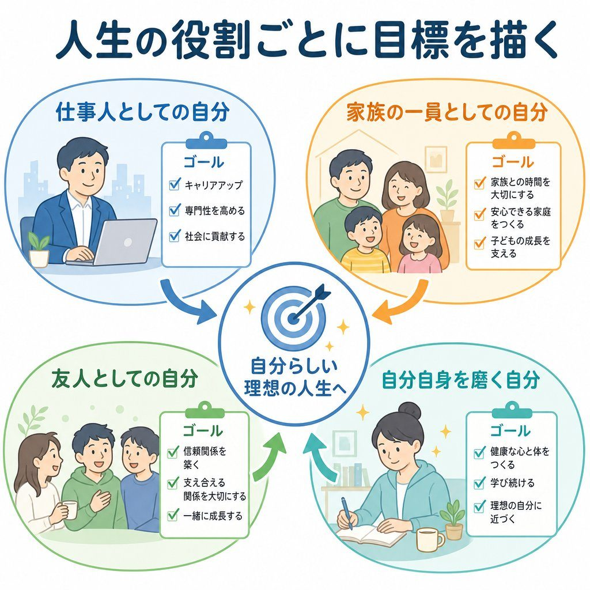
人生の役割ごとに目標を描く
たとえば「親として、子どもの話を毎日5分聞ける自分でありたい」「働く者として、後輩に頼られる存在でありたい」。
役割ごとに分けると、抽象的だったゴールが、急に具体的で身近なものになります。
そして大切なのは、どれか1つの役割だけに偏らないこと。
仕事で大成功しても、家庭が壊れていては本当の成功とは言えないからです。
複数の役割をバランスよく見渡すことで、人生全体の設計図が立体的に描けるようになります。
一週間を先にデザインする
第3の習慣を実践する、とても効果的な方法があります。
それは、一日単位ではなく、一週間単位で計画を立てることです。
毎朝その日のToDoリストを書くやり方では、どうしても目の前の緊急なことばかりが並んでしまいます。
そこで、週の初めに少し時間をとり、まず「今週、それぞれの役割で一番大切なことは何か」を考えます。
そして、その大切なこと（第II領域）を、先に手帳の空いている時間に置いてしまうのです。
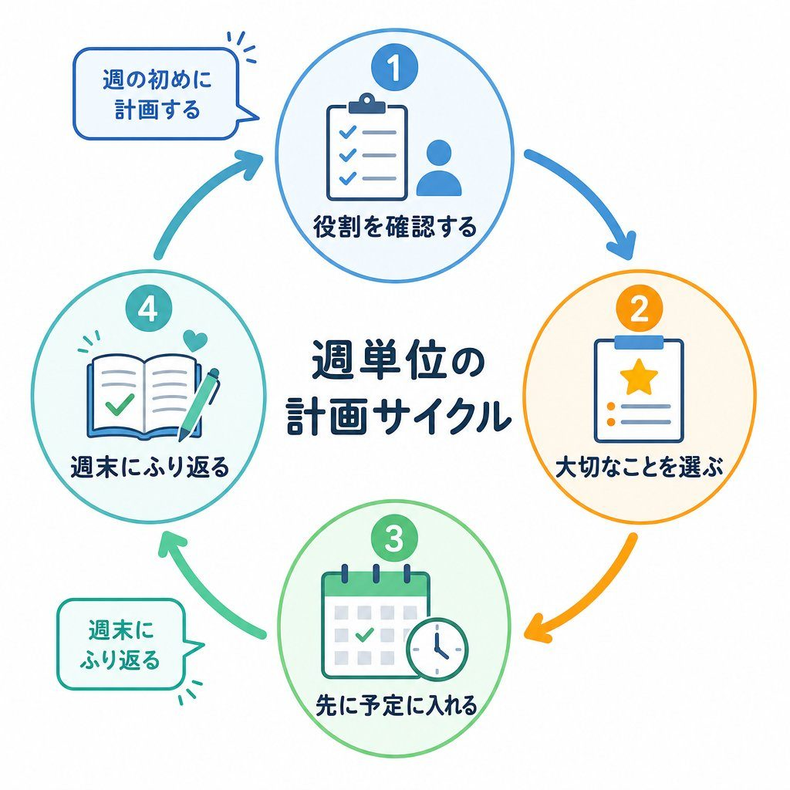
週単位の計画サイクル
大きな石と砂と水の有名なたとえがあります。
バケツに先に砂を入れてしまうと、大きな石は入りきりません。
けれど、先に大きな石を入れてから砂を流し込めば、すべてがきれいに収まります。
「大きな石」とは、あなたにとって本当に重要なこと。
緊急という名の砂に埋もれてしまう前に、まず大きな石を置く。
これが、週単位で計画する最大の知恵なのです。
第2章のまとめ ―― 明日からの小さな一歩
第2章では、私的成功の核となる2つの習慣を学びました。
人生のゴールから逆算して生きること（終わりを思い描く）。
そして、緊急ではないが重要なことを優先すること（最優先事項を優先する）。
明日からの小さな一歩は、「今週、第II領域のことを1つだけ予定に入れる」ことです。
運動でも、読書でも、大切な人との時間でも構いません。
緊急に流される前に、重要なことを先に予定として確保する。
たったこれだけで、あなたの一週間の質は確実に変わり始めます。
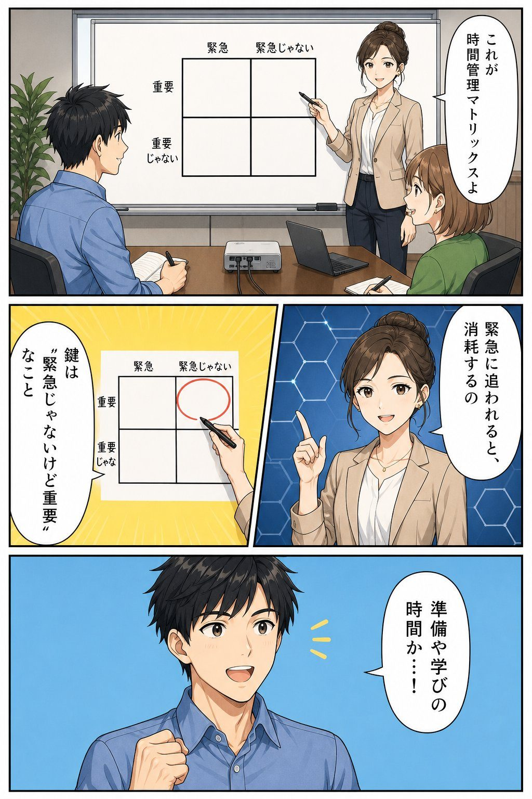
03第3章 信頼で人とつながる
信頼で人とつながる
自立の次にある「相互依存」
第1章から第2章まで、私たちは「自分を整える」ことを学んできました。
主体的になり、ゴールを描き、大切なことを優先する。
これらは「私的成功」、つまり他人に頼らず自分の足で立つ「自立」へ向かう習慣です。
けれど、コヴィー博士は「自立がゴールではない」と言います。
多くの人は「誰にも頼らず一人でやり遂げること」を最高の状態だと思い込んでいます。
しかし本当に大きな成果は、一人では決して生み出せません。
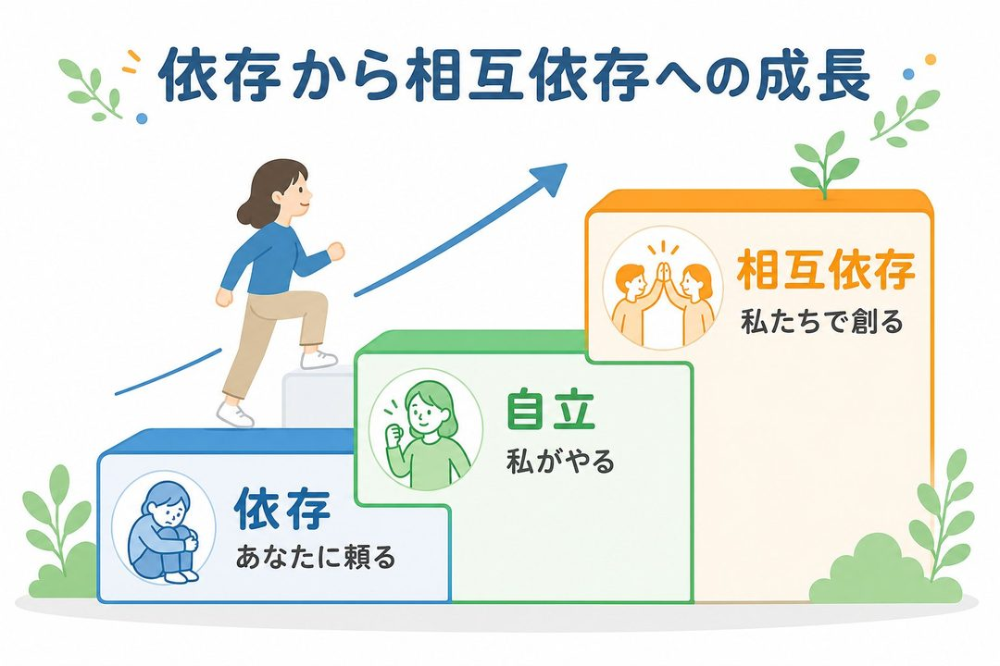
依存から相互依存への成長
成長には段階があります。
依存（あなたがいないと困る）から、自立（自分のことは自分でできる）へ。
そしてその先に、相互依存（互いの力を合わせて、一人では届かない高みへ）があります。
第3章からは、この相互依存へと進むための「公的成功」の習慣に入っていきます。
信頼残高 ―― 人間関係は銀行口座
人と協力するうえで、すべての土台になるのが「信頼」です。
コヴィー博士はこれを「信頼残高」という、とてもわかりやすいたとえで説明しました。
人間関係は、銀行の口座のようなものです。
約束を守る、誠実に振る舞う、小さな親切をする。
こうした行いは口座への「預け入れ」です。
反対に、約束を破る、相手を無視する、心ない言葉をかける。
これらは「引き出し」になります。
信頼残高の預け入れと引き出し
残高がたっぷりあれば、多少の行き違いがあっても関係は壊れません。
「あの人なら悪気はないだろう」と受け止めてもらえるからです。
逆に残高が底をついていると、ちょっとした一言で信頼は崩れてしまいます。
日頃のコツコツとした預け入れが、いざというときのあなたを守ってくれるのです。
第4の習慣 ―― Win-Winを考える
第4の習慣は「Win-Winを考える」。
お互いが勝つ、つまりどちらも満足できる結果を探すという姿勢です。
人間関係には、いくつかのパターンがあります。
自分が勝って相手が負ける「Win-Lose」、自分が我慢して相手を立てる「Lose-Win」、共倒れの「Lose-Lose」。
多くの人は、勝ち負けでしか物事を考えられません。
けれどコヴィー博士は、第4の選択肢として「Win-Win」、そして時には「取引しないことに合意する（No Deal）」という道もあると教えます。
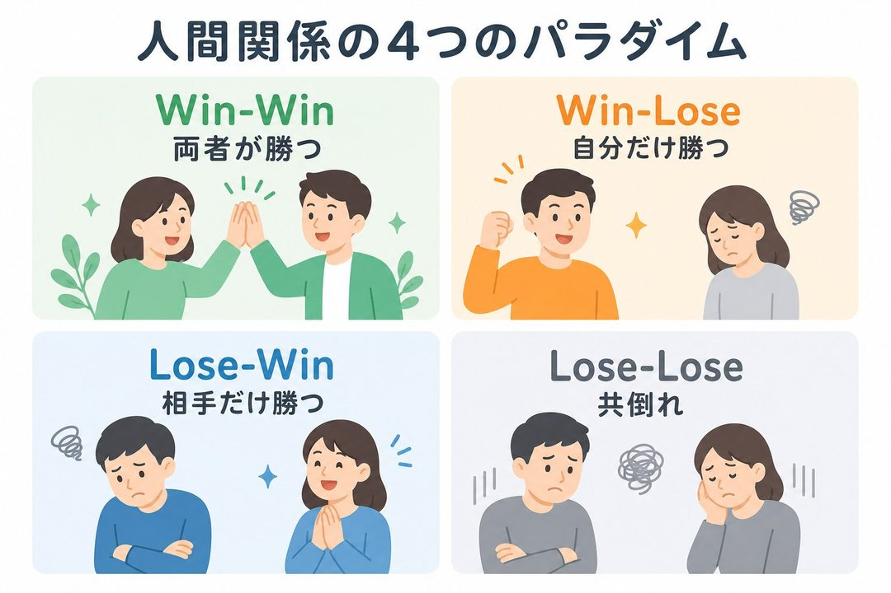
人間関係の4つのパラダイム
Win-Winの根っこにあるのは、「豊かさマインド」です。
「成功は奪い合うものだ」と考える欠乏マインドの人は、誰かが得をすると自分が損をすると思い込みます。
けれど豊かさマインドの人は、「パイは協力すれば大きくできる」と信じています。
相手の成功を喜べる人こそ、結果的に自分も大きく成功するのです。
第5の習慣 ― まず理解に徹し、そして理解される
Win-Winの関係を築こうとしても、そもそも相手のことがわかっていなければ始まりません。
そこで欠かせないのが、第5の習慣「まず理解に徹し、そして理解される」です。
ここで大切なのは、順番です。
多くの人は逆をやってしまいます。
まず自分をわかってほしくて、自分の話ばかりする。
相手が話している間も、「次に何を言おうか」と考えていて、本当には聞いていません。
これをコヴィー博士は「自叙伝的な反応」と呼びました。
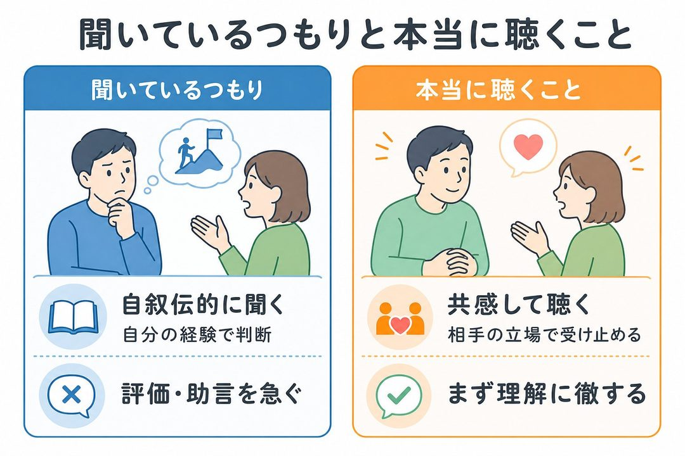
聞いているつもりと本当に聴くこと
医者が診察もせずに薬を出したら、誰も信用しません。
それと同じで、相手を理解しないまま助言しても、心には届かないのです。
第5の習慣が教えるのは「共感による傾聴」。
相手の言葉だけでなく、その奥にある感情や意味を、相手の立場に立って受け止めることです。
不思議なもので、「この人は本当に自分をわかってくれた」と感じると、人は心を開きます。
そして今度は、あなたの話に耳を傾けてくれるようになります。
まず相手を理解する。
それが、自分を理解してもらう一番の近道なのです。
共感の傾聴、4つの落とし穴
「まず理解に徹する」と言っても、私たちは無意識のうちに、相手の話をさえぎってしまいがちです。
コヴィー博士は、人がやりがちな4つの自叙伝的な反応を挙げています。
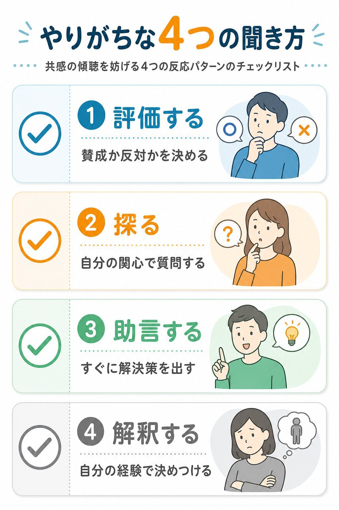
やりがちな4つの聞き方
1つ目は評価。
相手の話に、すぐ賛成・反対のジャッジを下す。
2つ目は探り。
自分が聞きたいことを質問攻めにする。
3つ目は助言。
求められてもいないのに、解決策を押しつける。
4つ目は解釈。
「それはきっとこういうことだろう」と、自分の経験で決めつける。
どれも善意から出ていることが多いのですが、相手からすると「わかってもらえていない」と感じてしまいます。
共感の傾聴とは、これらをいったん脇に置き、ただ相手の気持ちと意味を、相手の言葉で受け止めることです。
「つらかったんだね」「そう感じているんだね」と、相手の感情をそのまま返すだけでいい。
助言よりも、わかろうとする姿勢のほうが、ずっと深く相手の心に届くのです。
Win-Winは「合意」で形にする
第4の習慣を、気持ちだけで終わらせないためのコツがあります。
それは、Win-Winの関係を具体的な「合意」として言葉にすることです。
何かを一緒に進めるとき、あいまいなまま始めると、後で「言った・言わない」のトラブルになりがちです。
そこで最初に、お互いが何を期待しているのかをはっきりさせておきます。
望む結果は何か、どこまでが各自の役割か、何をもって成功とするか。
これを率直に話し合っておくのです。
Win-Winの合意をつくる流れ
大切なのは、これを「縛り合うルール」ではなく、「お互いが安心して力を出すための土台」と捉えることです。
期待がそろっていれば、細かく管理し合う必要はありません。
信頼に基づいた合意があれば、人は自分から進んで最高の仕事をするようになります。
これこそ、Win-Winを日々の関係の中で生かす、実践的な知恵なのです。
第3章のまとめ ―― 明日からの小さな一歩
第3章では、人と信頼でつながるための習慣を学びました。
信頼残高をコツコツ積むこと。
お互いが勝つ道を探すこと（Win-Win）。
そして、まず相手を理解すること（理解に徹する）。
明日からの小さな一歩は、「話を最後まで、さえぎらずに聴く」ことです。
相手が話しているとき、アドバイスや反論をぐっとこらえて、ただ理解しようと耳を傾けてみてください。
たったそれだけで、相手の信頼残高に大きな預け入れができます。
聴くことは、最強の思いやりです。
04第4章 違いから新しい答えを生む
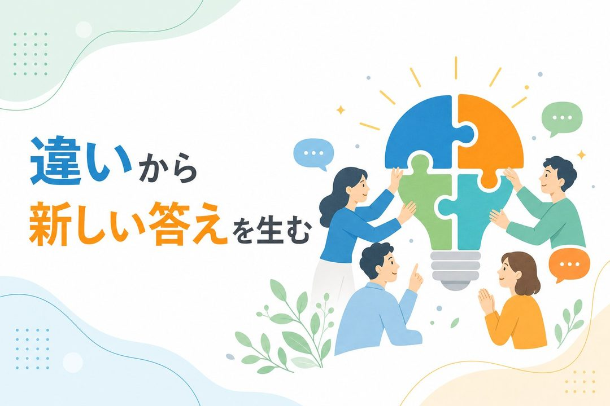
違いから新しい答えを生む
第6の習慣 ―― シナジーを創り出す
ここまで学んできた習慣が、すべて1つに結びつく場所――それが第6の習慣「シナジーを創り出す」です。
シナジーとは、1足す1が2ではなく、3にも、10にもなること。
一人ひとりの力の足し算を超えた、まったく新しい成果が生まれる状態を指します。
自然界を見ると、シナジーはあちこちにあります。
2本の木が近くで育つと、根が支え合い、一本のときよりも強い風に耐えられます。
別々の楽器が合わさってオーケストラになると、一つの楽器では決して出せない音楽が生まれます。
人と人が真に協力したとき、同じことが起こるのです。
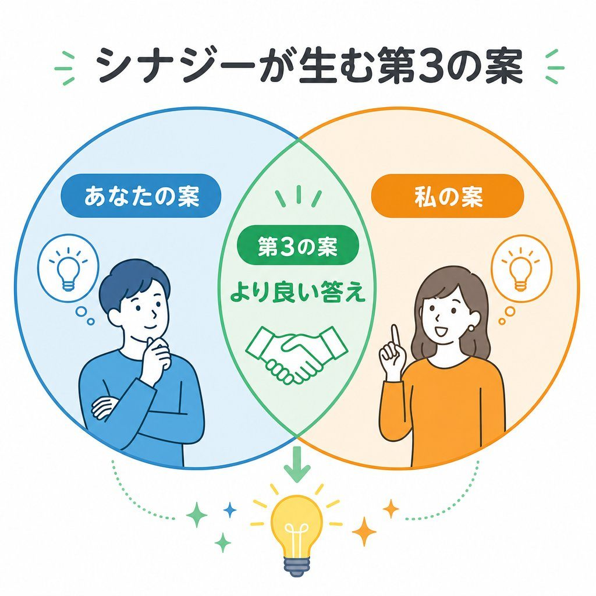
シナジーが生む第3の案
シナジーは、これまでの習慣の集大成です。
主体的で（第1）、ゴールが明確で（第2）、大切なことを優先し（第3）、Win-Winを願い（第4）、相手を深く理解する（第5）。
これらがそろってはじめて、人は安心して心を開き、互いの力を掛け合わせることができるのです。
妥協ではなく、第3の案を
シナジーを理解するために、まず「妥協」との違いをはっきりさせましょう。
意見が対立したとき、多くの人は妥協で済ませます。
お互いが少しずつ譲り合い、足して2で割る。
これは1足す1が1.5になるようなもので、どちらも本当には満足していません。
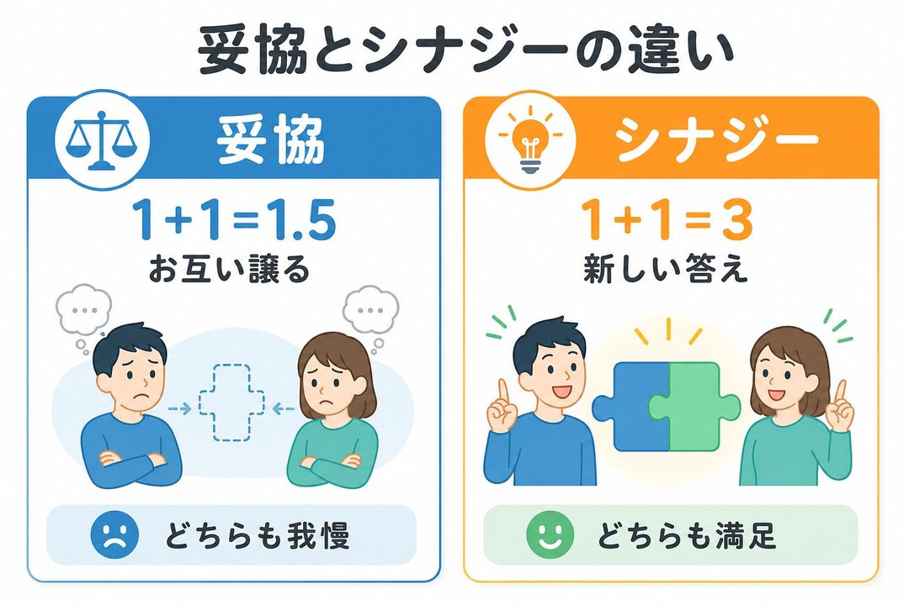
妥協とシナジーの違い
一方シナジーは、「あなたの案でも私の案でもない、もっと良い第3の案を一緒に見つけよう」という姿勢です。
最初から答えが決まっているのではなく、対話を通して、誰も予想しなかった解決策が生まれる。
「あなたは正しい、私は間違い」でも、その逆でもなく、「二人ならもっと良い道を見つけられる」と信じるのです。
これは話し合いの場だけの話ではありません。
家庭でも、職場でも、意見がぶつかったときこそ、シナジーのチャンスです。
対立を「どちらが勝つか」ではなく「一緒に何を生み出せるか」と捉え直すだけで、関係はまったく違うものになります。
「違い」こそが宝である
シナジーの本質は、ひと言で言えば「違いを尊重すること」です。
私たちはつい、自分と意見が違う人を「面倒な相手」「わかってくれない人」と感じてしまいます。
けれど、もし全員がまったく同じ考えだったら、新しいものは何も生まれません。
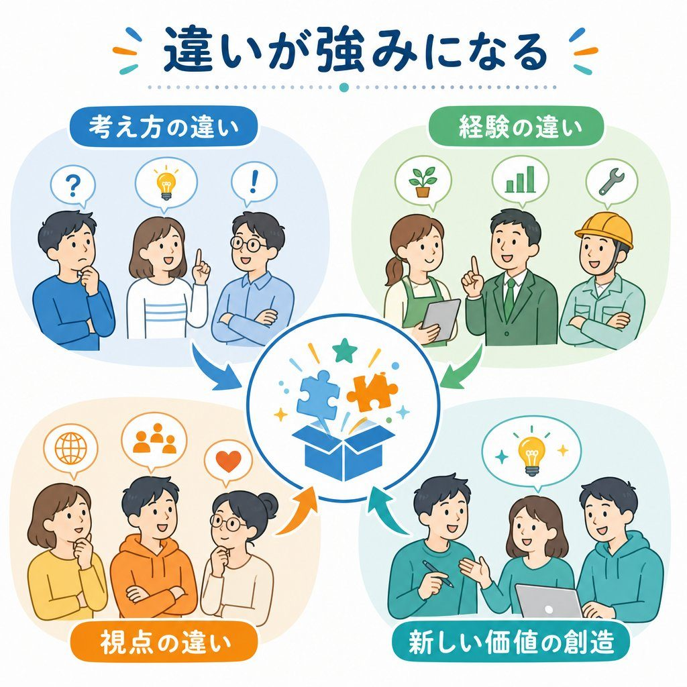
違いが強みになる
コヴィー博士は、「違いこそが、シナジーの源泉だ」と言います。
自分に見えていないものを、相手は見ているかもしれない。
自分の弱みを、相手の強みが補ってくれるかもしれない。
「私と違う」は脅威ではなく、「私にないものを持っている」という宝なのです。
その第一歩は、心の中でこうつぶやくことです。
「この人が自分と違う考えを持っているのは、すばらしいことだ。
ぜひその見方を聞かせてほしい」。
この姿勢が、シナジーへの扉を開きます。
違いを恐れる人は孤立し、違いを楽しむ人のまわりには、自然と多くの知恵と協力が集まってくるのです。
信頼があってこそ、シナジーは生まれる
ただし、シナジーは魔法ではありません。
お互いに信頼がなければ、人は本音を出しません。
本音が出なければ、表面的な妥協で終わってしまいます。
だからこそ、第3章で学んだ信頼残高と共感の傾聴が、ここで生きてくるのです。
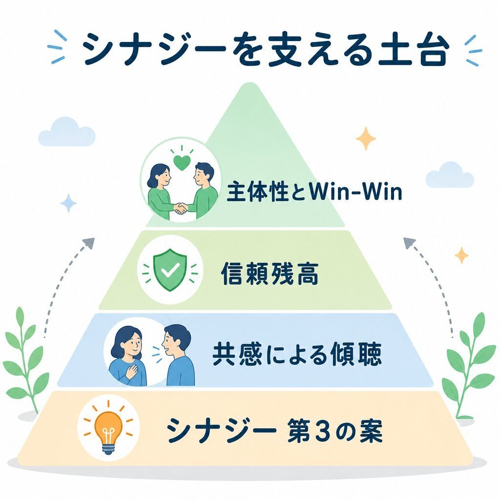
シナジーを支える土台
高い信頼があり、互いを理解しようとする姿勢があるとき、人は安心して「実はこう思う」と打ち明けられます。
その正直な対話の中から、第3の案が立ち上がってくる。
シナジーとは、これまでの6つの習慣すべてが実を結ぶ瞬間なのです。
一つひとつの習慣は、この豊かな実りのために積み重ねてきたものだったと気づくでしょう。
シナジーが生まれた、ある会議の話
シナジーを、ひとつの場面で見てみましょう。
ある職場で、新しい企画の進め方をめぐって、二人の意見が真っ向から対立しました。
一人は「じっくり時間をかけて準備すべきだ」と主張し、もう一人は「とにかく早く試して反応を見るべきだ」と譲りません。
ありがちなのは、上司が「では中間をとって」と妥協案を出す展開です。
けれどそれでは、慎重派は「準備不足だ」と不満を抱き、スピード派は「遅すぎる」と感じ、どちらも本気になれません。
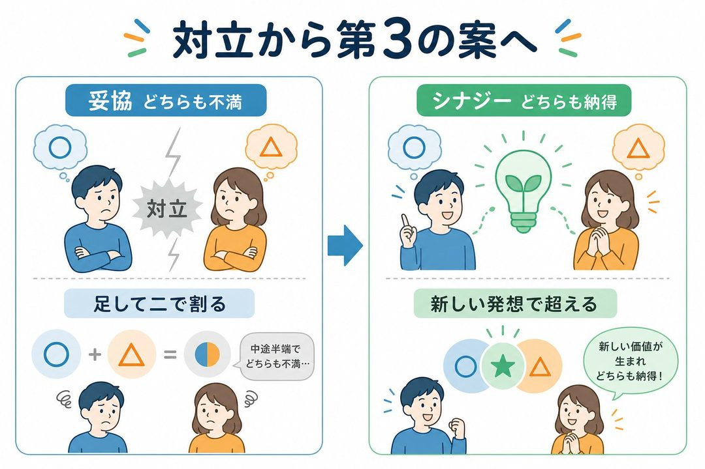
対立から第3の案へ
ところがこのとき、二人はまず相手の話を最後まで聴きました。
すると、慎重派が恐れていたのは「準備不足で大失敗すること」、スピード派が望んでいたのは「早く学びを得ること」だと、お互いに見えてきたのです。
そこから生まれたのが、第3の案でした。
「失敗しても痛手の小さい、ごく小規模な形で、来週すぐに試してみよう」。
これは、どちらの案でもありません。
けれど、慎重派の「リスクを抑えたい」も、スピード派の「早く動きたい」も、両方が満たされています。
違いをぶつけ合うのではなく、違いの奥にある本当の願いを重ね合わせたとき、誰も思いつかなかった道が開けたのです。
これがシナジーの正体です。
自分の中にもシナジーは起こる
シナジーは、人と人の間だけで起こるものではありません。
実は、自分自身の中にも起こります。
コヴィー博士はこれを「内なるシナジー」と呼びました。
私たちは誰しも、心の中に複数の声を持っています。
「論理的に考えたい自分」と「感情を大切にしたい自分」、「挑戦したい自分」と「安全でいたい自分」。
多くの人は、このどちらか一方を「正しい」とし、もう一方を抑え込もうとします。
けれど本当は、両方の声に耳を傾け、組み合わせたときにこそ、いちばん良い判断ができるのです。
頭で考えた答えと、心が感じている答えが食い違うとき、すぐにどちらかを切り捨てないでください。
「論理ではこう、でも気持ちはこう。
では、その両方を満たす道はないだろうか」。
そう問いかけることが、自分の中の第3の案を生み出します。
自分の内側で違いを尊重できる人は、外の世界でも、人との違いを宝として扱えるようになります。
シナジーは、まず自分自身との対話から始まるのです。
第4章のまとめ ―― 明日からの小さな一歩
第4章では、人と力を合わせて、一人では届かない成果を生む習慣を学びました。
妥協ではなく第3の案を探すこと。
そして、違いを脅威ではなく宝として歓迎すること（シナジー）。
明日からの小さな一歩は、「自分と違う意見に出会ったら、まず『なるほど、その見方は面白い』と言ってみる」ことです。
反論したくなる気持ちをこらえ、相手の視点に興味を持つ。
その小さな一言から、思いもよらない良いアイデアが生まれるかもしれません。
違いを歓迎する人に、新しい答えは微笑みます。
05第5章 自分を磨き続ける
自分を磨き続ける
第7の習慣 ―― 刃を研ぐ
いよいよ最後の習慣です。
第7の習慣は「刃を研ぐ」。
英語では Sharpen the Saw、つまり自分自身を定期的に手入れし、新しくするという意味です。
コヴィー博士は、こんな話を紹介しています。
森で、ある人が必死にノコギリで木を切っています。
けれど刃はすっかり切れなくなっていて、ちっとも進みません。
「少し休んで刃を研いだらどうですか」と声をかけると、その人はこう答えます。
「研いでいる暇なんてない。
木を切るのに忙しいんだ」。
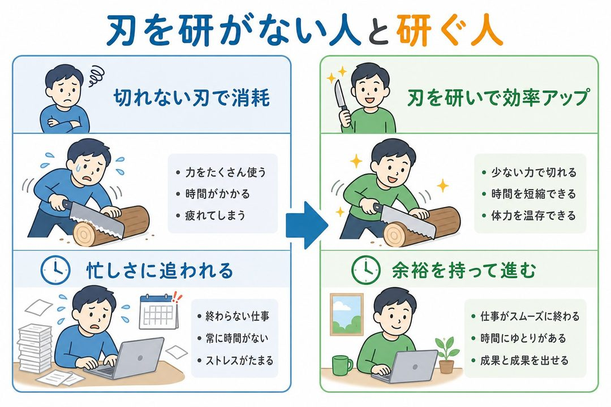
刃を研がない人と研ぐ人
私たちも、まったく同じことをしていないでしょうか。
忙しさにかまけて、自分自身という最も大切な道具の手入れを後回しにする。
睡眠を削り、学びをやめ、心をすり減らしながら走り続ける。
けれど、いちばん大切な投資先は、ほかでもない「自分自身」なのです。
刃を研ぐ時間こそ、第2章で学んだ第II領域（緊急ではないが重要なこと）の代表格です。
磨くべき4つの側面
では、具体的に何を磨けばいいのでしょうか。
コヴィー博士は、人間を支える4つの側面をバランスよく手入れすることを勧めています。
刃を研ぐ4つの側面
1つ目は肉体です。
適度な運動、十分な睡眠、バランスのよい食事。
体は、すべての活動の土台です。
2つ目は精神です。
静かに自分と向き合う時間、自然に触れること、自分の価値観を確かめること。
心の軸を整える時間です。
3つ目は知性です。
読書や学習を通して、考える力を磨き続けること。
学びを止めた瞬間、人の成長は止まります。
4つ目は社会・情緒です。
人との温かいつながりを育て、誰かの役に立つこと。
第4〜第6の習慣を、日々の生活の中で実践することそのものでもあります。
この4つは、どれか1つだけでは不十分です。
4つをバランスよく磨くことで、はじめて自分という道具は鋭く保たれるのです。
成長は「らせん階段」を上るように
第7の習慣には、もう一つ大切な意味があります。
それは、この習慣が、ほかの6つすべてを支える土台になるということです。
刃を研いで自分を整えると、より主体的になれます（第1）。
心に余裕が生まれ、ゴールを描き直せます（第2）。
エネルギーが満ちて、大切なことを優先できます（第3）。
そして、豊かな心で人と関わり、Win-Win、傾聴、シナジーを実践できるようになります（第4〜6）。
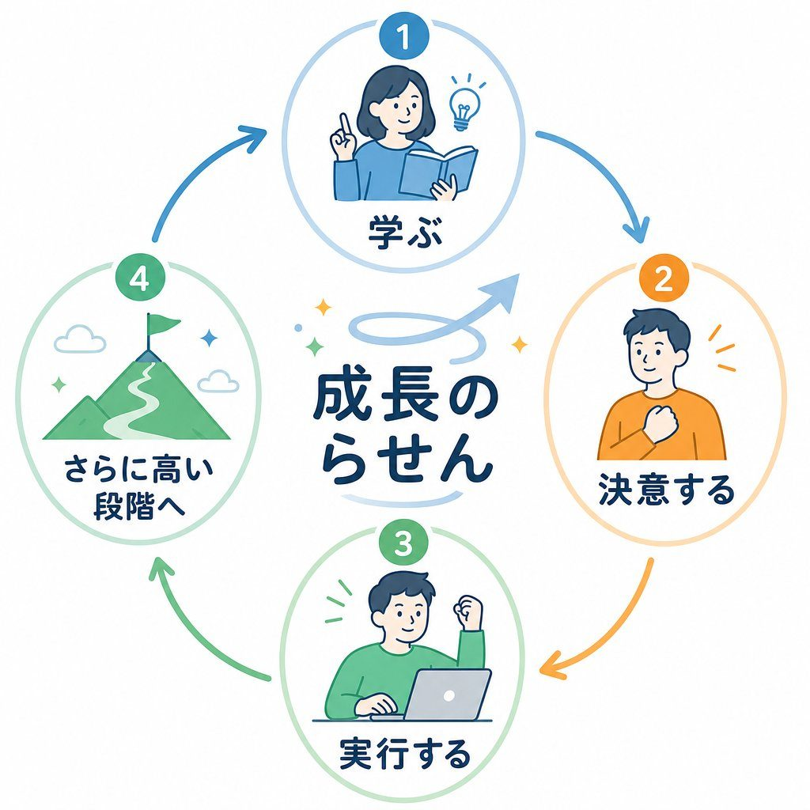
成長のらせん
コヴィー博士は、この成長を「上向きのらせん階段」にたとえました。
学び、決意し、実行する。
そしてまた一段高いところで、より深く学び、決意し、実行する。
同じところをぐるぐる回っているように見えて、実は少しずつ上の段へと進んでいる。
7つの習慣は、一度きりのゴールではなく、生涯にわたって繰り返し上っていく階段なのです。
7つの習慣をひとつにつなぐ
最後に、7つの習慣全体をふり返りましょう。
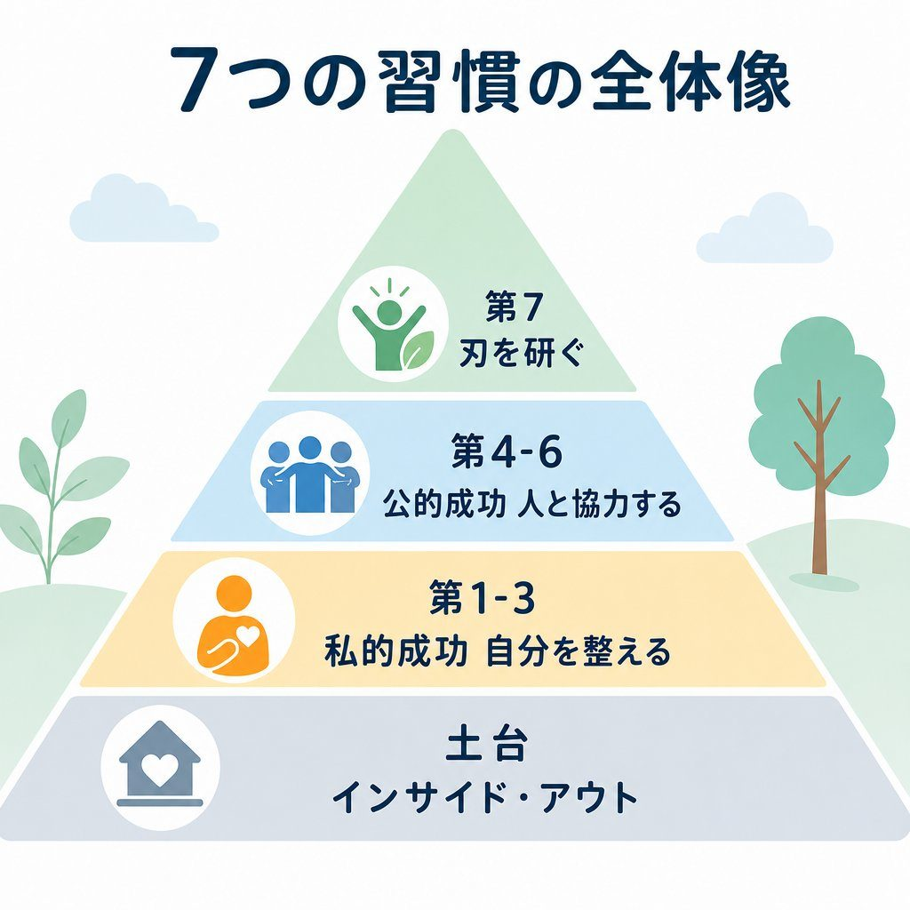
7つの習慣の全体像
土台にあるのは「インサイド・アウト」、すべては自分の内側から始まるという考え方。
その上で、第1〜第3の習慣で自分を整える「私的成功」を果たし、第4〜第6の習慣で人と力を合わせる「公的成功」へと進む。
そして第7の習慣が、その全体を支え、磨き続ける。
バラバラの7つではなく、深くつながった一つの生き方なのだと、今ならわかるはずです。
毎日の小さな「研ぎ」の習慣
「刃を研ぐ」と聞くと、長い休暇や特別な時間が必要だと感じるかもしれません。
けれど実際には、毎日のほんの少しの積み重ねこそが、いちばん効果的な研ぎ方です。
朝の数分間、軽く体を動かす。
通勤中に本を1ページ読む。
昼休みに数回、深く呼吸して心を落ち着ける。
寝る前に、今日あった良かったことを一つ思い出す。
どれも数分でできることばかりですが、これらを毎日続けることで、4つの側面が少しずつ整っていきます。
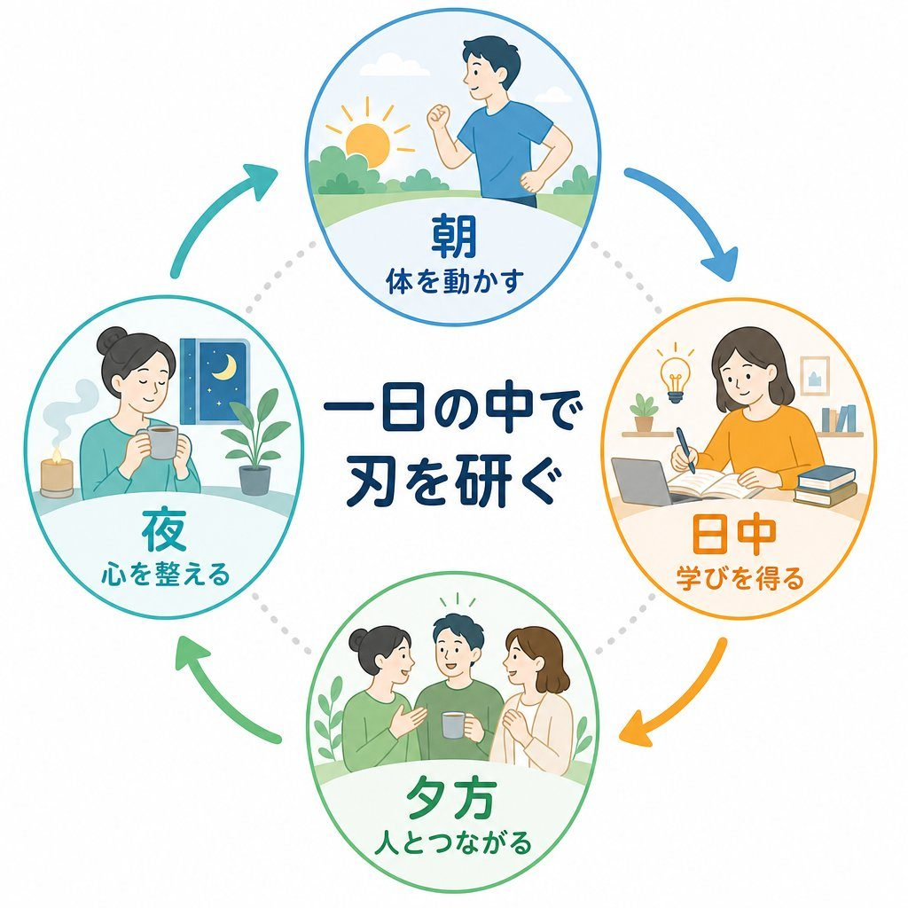
一日の中で刃を研ぐ
コヴィー博士は、こうした自分への投資を「毎日の私的な成功」と呼びました。
誰にも気づかれない、ささやかな習慣。
けれど、それを続けた人だけが、いざというときに鋭い刃で大きな仕事を成し遂げられます。
一日に一度、自分の刃に手をかける。
その小さな約束を自分と結ぶことが、7つの習慣すべてを生かし続ける秘訣なのです。
第5章のまとめ ―― 明日からの小さな一歩
第5章では、自分自身を磨き続ける習慣を学びました。
忙しさに流されず、刃を研ぐ時間をとること。
肉体・精神・知性・社会情緒の4側面をバランスよく整えること。
明日からの小さな一歩は、「4つの側面のうち、今いちばん手入れが足りないものを1つ選び、5分だけ手当てする」ことです。
体が疲れているなら早く眠る。
心が乾いているなら静かに深呼吸する。
自分を大切にする時間が、結局はすべての習慣を支えてくれます。
06おわりに
ここまで読んでくださって、ありがとうございました。
7つの習慣をめぐる旅は、いかがでしたか。
ふり返ってみると、7つの習慣は決して難しい特別なテクニックではありませんでした。
自分のものの見方に気づき、内側から変わり、自分を整え、人と信頼で結ばれ、力を合わせ、そして自分を磨き続ける。
そのどれもが、私たちの毎日の中で実践できる、地に足のついた生き方です。
大切なのは、知っていることと、実際にやっていることは違うということです。
この本を読み終えた今、あなたは7つの習慣を「知って」います。
けれど、それが本当にあなたの力になるのは、日々の暮らしの中で「やってみた」ときです。
だからこそ、最後にもう一度お願いします。
完璧を目指さないでください。
7つすべてを一度に実践しようとすれば、きっと息切れしてしまいます。
この本の中で「これならできそう」と感じたものを、たった1つでいいので、明日から試してみてください。
ひと呼吸おくことでも、話を最後まで聴くことでも、第II領域の予定を1つ入れることでも構いません。
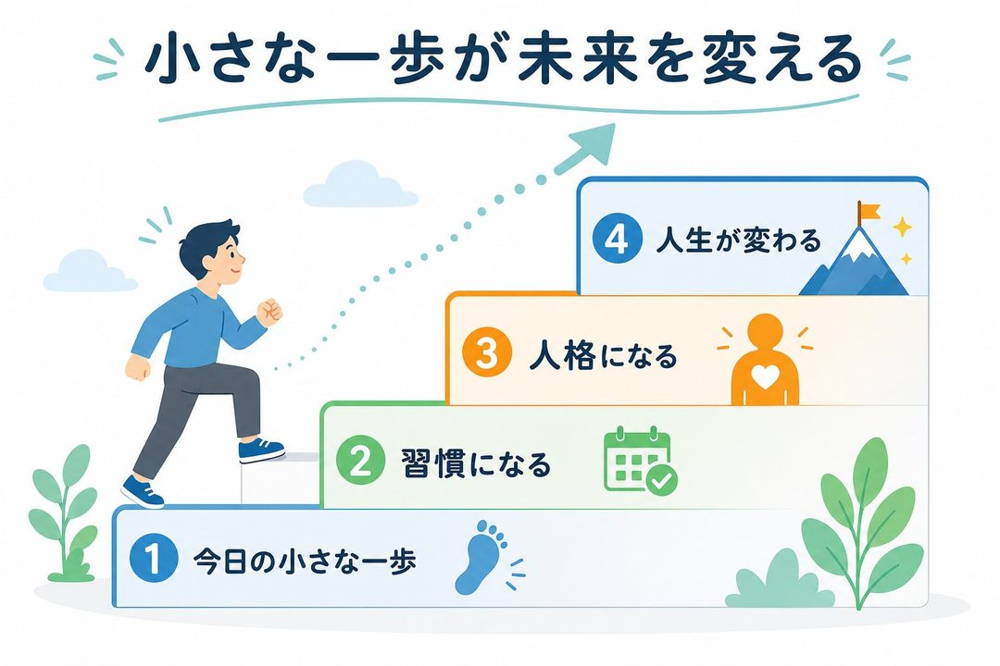
小さな一歩が未来を変える
小さな行動も、繰り返せば習慣になります。
習慣は、やがて人格になります。
そして人格は、あなたの人生そのものを形づくっていきます。
コヴィー博士が伝えたかったのは、まさにこのことでした。
今日の小さな一歩が、半年後、一年後、そして一生をかけて、あなたを変えていく。
7つの習慣は、一度読んで終わりにする本ではありません。
人生の節目ごとに読み返すたびに、新しい気づきを与えてくれる、生涯の伴走者です。
この本が、あなたのその旅の、最初のやさしい一歩になれたなら、これほど嬉しいことはありません。
最後に、一つだけ覚えておいてほしいことがあります。
習慣を変えようとすると、必ず「うまくいかない日」がやってきます。
ひと呼吸おくつもりが、つい感情的に反応してしまう。
聴くと決めたのに、また自分の話ばかりしてしまう。
そんな日があっても、自分を責める必要はまったくありません。
気づいて、また明日やり直せばいい。
その「やり直せる」こと自体が、あなたが主体的に生きている何よりの証拠なのです。
7つの習慣は、完璧な人間になるための厳しい戒律ではありません。
より良く生きたいと願う、すべての人へのやさしい道しるべです。
つまずいても、立ち止まっても、この道しるべはいつでもあなたを待っていてくれます。
あなたの毎日が、今日より少しだけ豊かで、効果的なものになりますように。
さあ、明日から、その一歩を踏み出しましょう。
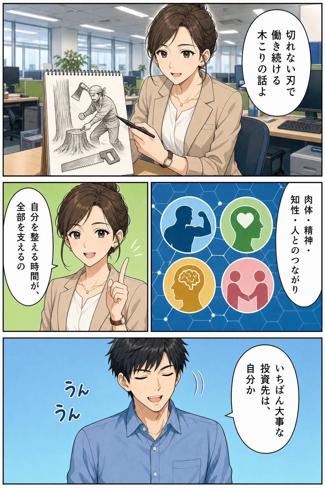
© 竹谷知悦 / 特別プレゼント版